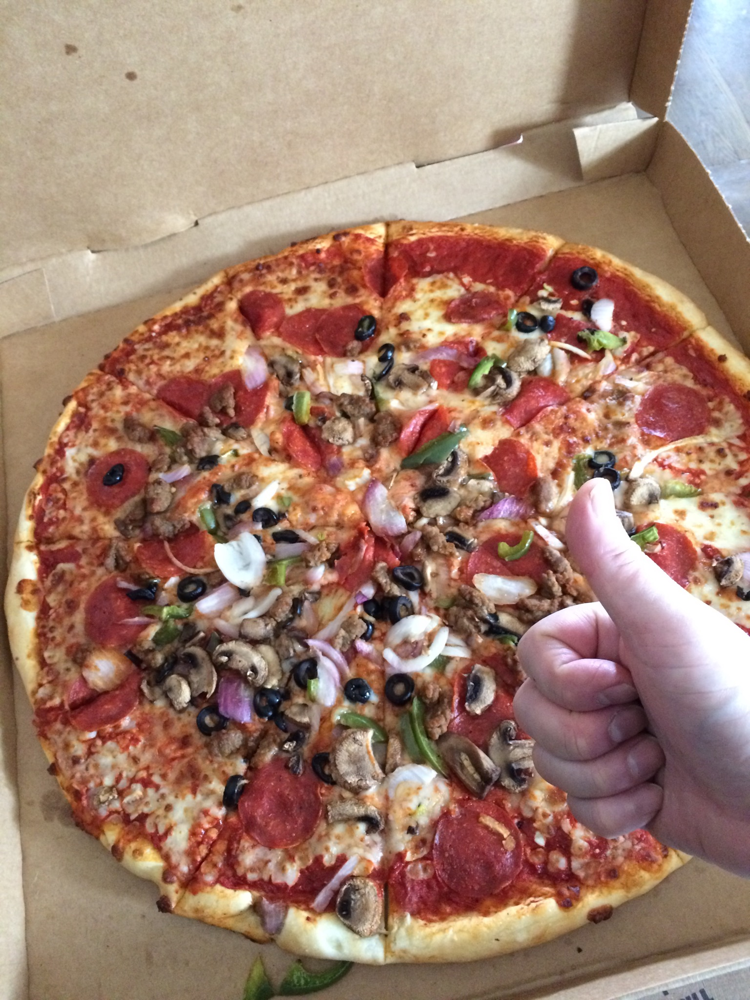
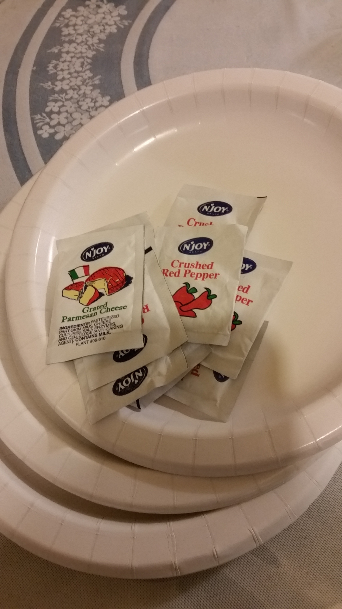

I'm talking about those fun activities that we enjoy to do. Hobbies can distract ourselves from the daily grinds, to make us feel satisfied, or just passing the times. My has always been eating, eating pizza that is. Pizza gives me that feeling of rewarding after a long day working or studying for my front-end-development class.
At the weekend, I'd promptly drive myself to my neighborhood Costco where currently it has my favorite and best deal around pizzas. Getting there early is key due to Costco has great deal on prices, buy-in-bulk and always busy from start to close. Once in, I'd head straight to the food court, order one whole combo and one whole cheese pizzas at one of the kiosks, hold on tight to my receipt then do some shopping for whatever I may need to buy for the home and rush straight to the cashier counter. Then without missing a beat, I'd circle back to the food court counter, at the pre-paid line, present my receipt to pick up my hot, just out of the oven pizzas where they are promptly await. Along with dried crush pepper and grated parmesan cheese packets, I usually get myself a good size plate of some chopped raw onions by the self help condiments counter.
 Once home, I'd usually reward myself immediately with a couple of slices full of raw onions of top. The crispiness texture can definitely be brought back by putting them in an oven for a few minutes. I don't know about you, but I like mine cheese-melting hot. The leftover slices can be:

That I'll be making fried chicken at home. The pictures from pexels below will guide me when I'm ready.


I hope your hobby can be as much fun, rewarding and tasty as mine.
Fried Chicken Basket of Jer Chung.
Fried Chicken Closeup of Pixabay.
Fried Chicken Basket of Valeria Boltneva.
Pizza pictures are property of author Thy Nguyen.